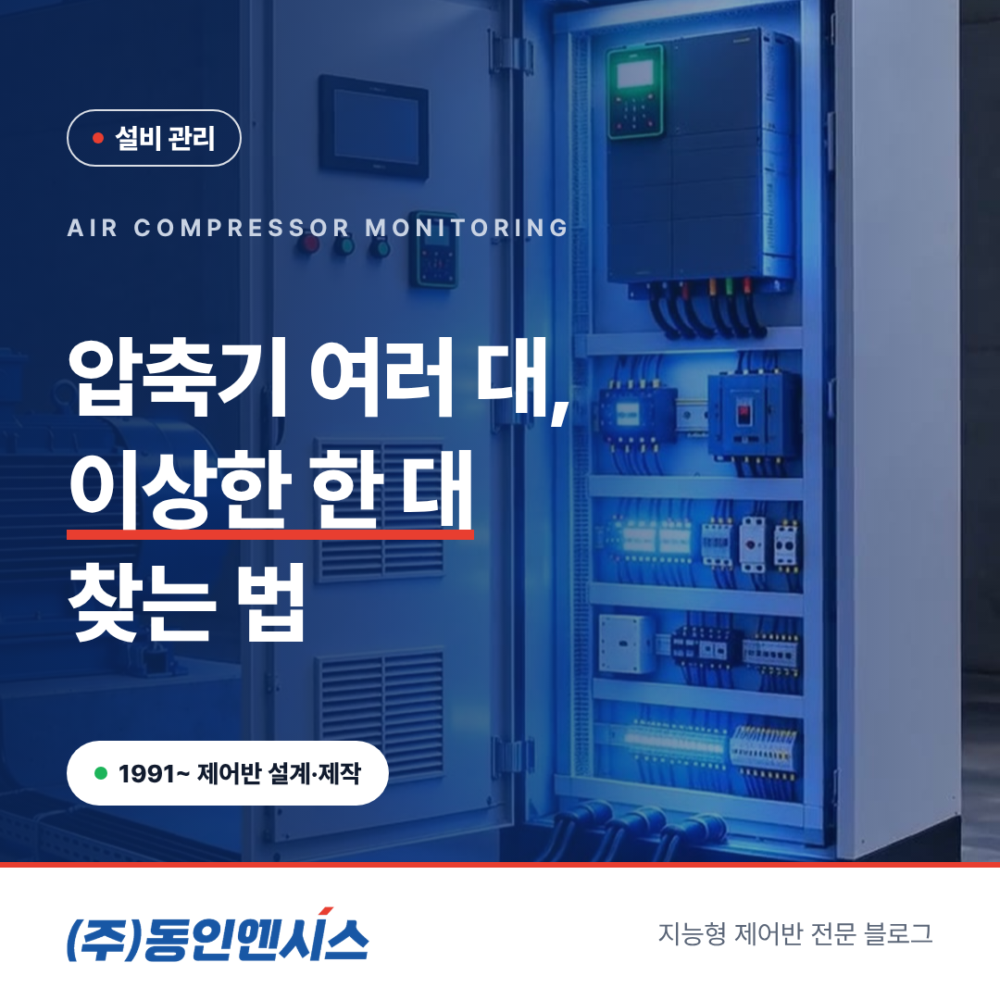
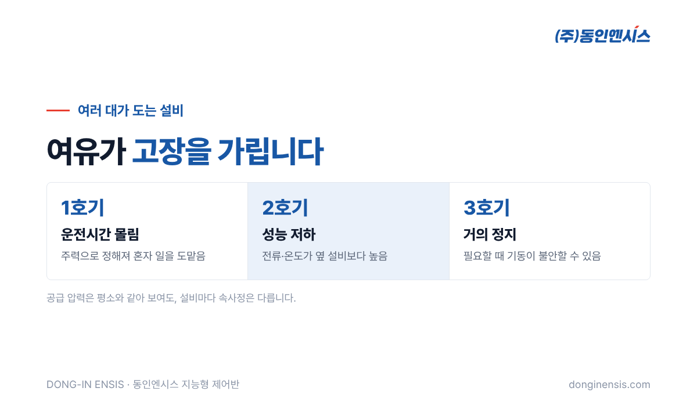
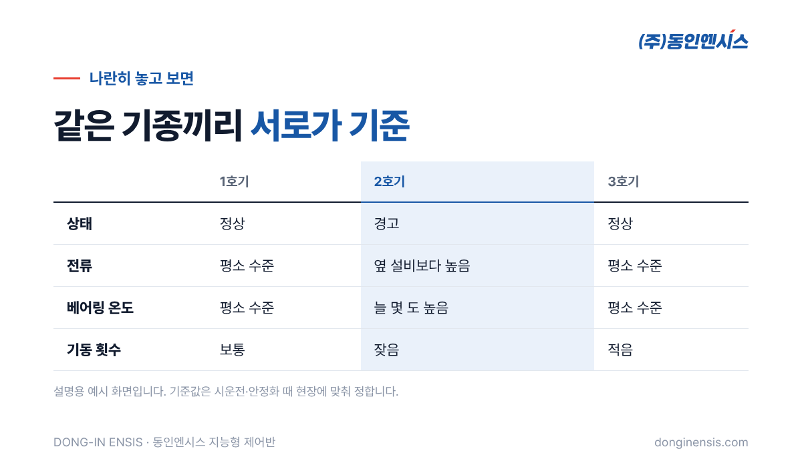

공장 한쪽의 압축기실이나 건물 지하의 가압펌프장에는 비슷한 설비가 여러 대 나란히 놓여 있습니다. 한 대가 서도 다른 설비가 받아 주니 당장은 문제가 없어 보이지만, 바로 그 점 때문에 이상을 늦게 알아차리기 쉽습니다. 부산에서 1991년부터 산업용 제어반을 설계하고 만들어 온 동인엔시스가, 여러 대가 함께 도는 설비를 데이터로 관리하는 공기압축기 모니터링의 원리를 풀어 보겠습니다.
압축기실과 가압펌프장은 대개 '여유'를 두고 설계합니다. 필요한 양보다 한두 대를 더 두고, 수요에 따라 대수를 늘리거나 줄이며 운전합니다. 덕분에 한 대가 멈춰도 공기나 물 공급은 이어집니다.
문제는 이 여유가 고장을 가린다는 데 있습니다. 한 대의 성능이 조금씩 떨어지면 다른 설비가 더 자주, 더 오래 돌며 빈자리를 메웁니다. 압력계 바늘은 평소와 같으니 아무도 눈치채지 못하고, 결국 남은 설비까지 무리하다가 한꺼번에 탈이 나는 일이 생깁니다. 겉으로 보이는 '공급 압력'만으로는 각 설비의 속사정을 알 수 없다는 뜻입니다.
여러 대를 운전하는 방식은 보통 두 가지를 섞어 씁니다. 수요에 따라 몇 대를 돌릴지 정하는 대수 제어, 그리고 특정 설비만 혹사당하지 않도록 순서를 바꾸는 교대 운전입니다.
이론상으로는 모든 설비가 고르게 돌아야 하지만, 실제 현장은 다릅니다. 고장 수리 뒤 순서가 꼬이기도 하고, 담당자가 특정 설비를 '주력'으로 정해 두기도 합니다. 그러다 보면 어떤 설비는 운전시간이 훨씬 길고, 어떤 설비는 거의 서 있습니다. 오래 서 있던 설비가 막상 필요할 때 제대로 기동하지 않는 경우도 있습니다. 반대로 혼자 일을 도맡던 설비는 베어링과 접점이 먼저 닳아, 정비 주기를 모두 똑같이 잡으면 그 설비만 늦게 손보게 됩니다.
그래서 설비마다 운전시간과 기동 횟수를 따로 남겨 두는 것이 출발점입니다. 운전 상태신호를 24시간 기록하면, 누가 얼마나 일했는지가 한눈에 보입니다.

동인엔시스 지능형 제어반은 압축기나 펌프를 제어하면서 동시에 운전 데이터를 모읍니다. 여러 대가 도는 설비에서는 특히 아래 값을 '설비끼리 나란히' 놓고 보는 것이 쓸모 있습니다.
공기압축기 모니터링이 한 대짜리 설비 감시와 다른 점이 여기에 있습니다. 한 대만 볼 때는 '이 값이 높은 건가?' 판단이 어렵지만, 같은 기종이 나란히 있으면 서로가 서로의 기준이 됩니다. 여러 대 설비의 가장 큰 장점입니다.
두 곳은 비슷해 보여도 챙길 점이 조금 다릅니다.
| 구분 | 공기압축기실 | 가압펌프장 |
|---|---|---|
| 주로 보는 부담 | 열(실내 온도 상승, 모터 발열) | 기동·정지 반복, 진동 |
| 수요 변화 | 생산 계획·교대 시간에 따라 | 사용량이 몰리는 시간대에 따라 |
| 놓치기 쉬운 것 | 여름철 환기 부족 | 야간 소량 사용 때 잦은 기동 |
압축기실은 열이 가장 큰 적입니다. 압축 과정에서 열이 많이 나고, 방이 좁으면 실내 온도가 함께 올라가 설비 온도를 더 끌어올립니다. 가압펌프장은 물 사용량이 들쭉날쭉한 시간에 펌프가 자주 켜졌다 꺼지면서 부담이 쌓입니다. 어느 쪽이든 그 현장의 '약한 고리'를 먼저 정해 두고 그 값부터 챙기는 것이 좋습니다.
Photorealistic photo of an industrial air compressor room in a Korean factory: three identical grey rotary screw air compressors lined up side by side, an air receiver tank and blue piping, a light-grey control cabinet with a small touchscreen on the wall, ventilation fan on the wall, warm summer daylight, no people, no brand logos, no readable text. 3:2 landscape.
여러 대 설비에서 알람 기준을 정할 때는 두 가지를 함께 씁니다. 하나는 설비마다 넘으면 안 되는 상한값이고, 다른 하나는 같은 기종끼리 비교했을 때 유독 튀는 설비를 찾는 눈입니다.
지능형 제어반은 센서별 기준값에 따라 상태를 정상·경고·알람의 세 단계로 나누어 보여 줍니다. 기준값은 시운전과 안정화 기간에 현장 상황을 보며 정하고, 운영하면서 계절이나 운전 방식이 바뀌면 다시 맞춥니다. 웹 대시보드에서 설비들을 한 화면에 늘어놓고 보면, 녹색 사이에 혼자 노란색인 설비가 금방 눈에 들어옵니다.

몇 달 기록이 쌓이면 설비 관리의 질문이 바뀝니다. '고장 나면 고치자'에서 '어느 설비를 언제 정비할까'로 넘어갑니다.
운전시간이 많이 쌓인 설비는 정비 계획을 앞당기고, 거의 쉬던 설비는 교대 순서를 조정해 고르게 쓰게 합니다. 전력량을 설비별로 나눠 보면, 같은 공기나 물을 만드는 데 어느 설비가 전기를 더 쓰는지도 드러납니다. 기간별 이력은 화면에서 바로 찾아볼 수 있고, 필요하면 CSV 파일로 내려받아 보고서에 붙일 수도 있습니다.
담당자가 바뀔 때도 차이가 큽니다. 예전에는 "3번 압축기는 원래 좀 뜨거워요" 같은 말이 사람 기억으로만 전해졌다면, 이제는 그 설비가 언제부터 얼마나 뜨거웠는지가 기록으로 남습니다. 공기압축기 모니터링의 진짜 쓸모는 화려한 화면보다 이렇게 설비의 내력을 남기는 데 있습니다.
Photorealistic photo of a building basement booster pump station in Korea: four vertical multistage pumps in a row on a concrete base with stainless steel headers and pressure gauges, a pressure tank, a light-grey control cabinet with status lamps, clean painted floor, cool fluorescent light, no people, no brand logos, no readable text. 3:2 landscape.
Q. 압축기나 펌프를 새것으로 바꿔야 하나요? 아닙니다. 설비는 그대로 두고 제어반만 교체하거나 새로 설치합니다. 기존 압축기·펌프의 모터와 배선 상태는 현장 분석 때 함께 확인합니다.
Q. 설비가 다섯 대인데 처음부터 전부 해야 하나요? 여러 대 설비는 서로 비교하는 데 장점이 있어 같은 기종을 묶어서 적용하는 것이 효과적입니다. 다만 예산이나 일정에 따라 한두 대부터 시작해 넓혀 갈 수도 있습니다.
Q. 공기압축기 모니터링 화면은 어디서 보나요? 웹 브라우저로 여는 대시보드에서 설비별 상태와 이력을 확인합니다. 사무실 PC나 휴대폰에서 볼 수 있어, 압축기실에 직접 내려가지 않아도 경고가 뜬 설비를 먼저 알 수 있습니다.
Q. 압축기 용량이 작아도 적용되나요? 모터로 구동되는 설비라면 대부분 적용할 수 있습니다. 용량과 수집 항목에 따라 제어반 구성이 달라지므로 현장을 본 뒤 정합니다.
여러 대가 도는 설비는 튼튼해 보이지만, 그 여유 때문에 한 대의 이상이 묻히기 쉽습니다. 설비마다 운전시간과 전류, 온도, 진동을 나란히 남겨 두면 '이상한 한 대'를 일찍 찾을 수 있습니다. 동인엔시스는 압축기실과 펌프장의 제어반을 바꾸는 일에서 그 기록을 시작하도록 돕습니다.
전화 051-862-3668 · 메일 dongin@donginmne.com
아래 질문 중 하나에 실제 경험으로 답해 본문 적당한 곳에 넣어 주세요. 사람이 직접 쓴 문장이 들어가면 네이버에서 저품질 위험이 줄고 노출에 도움이 됩니다.